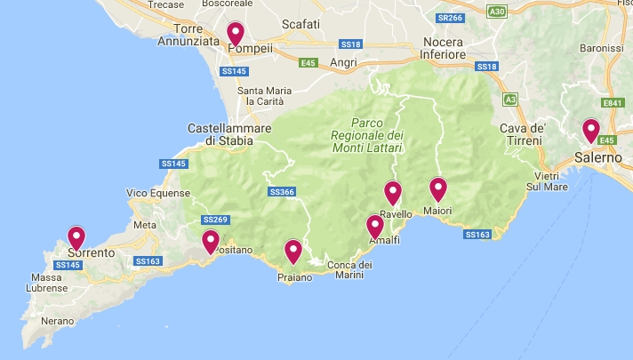

Take a look at Amalfi seaside, you believe you've got observed heaven on the earth. This is the spell-making impact of this Italian coast at the 5 million annual site visitors who move its first-rate roads. Positioned in the Campania location of Italy, this UNESCO world historical past website online covers an area of 34 miles; The towering coastal peaks of the Mediterranean Sea are coated with lush flowers and multicolored towns coated with unarmed turquoise waters, developing a scene that even the maximum experienced tourists have the strength to stop and die on their tracks.
The shoreline and thirteen coastal towns referred to as the homes are linked by using the SS163 parkway, which is taken into consideration one of the most scenic driveways in the international. Every metropolis has its personal signature Amalfi topography as well as its personal exceptional capabilities. Pastel-coloured Positano draws the wealthy with its luxurious hillside resorts and high-quality Italian eating, the town of Amalfi being the oldest maritime republic in Italy, and once serving as a huge commercial and technological center within the Mediterranean. The alpine metropolis of Ravello is not for the faint of coronary heart, however its old villas and stunning ocean views can be etched to your reminiscence for years yet to come. Praiano's secluded seashore will comfort seashore enthusiasts, and Minori, one of the world's oldest pastas, is a Mecca for meals lovers. If you plan to walk through Zetara, you can prevent at the historical Norman Tower, which become started out by Hercules himself, consistent with legend. But if you decide to discover the Amalfi seashore, its glory is guaranteed to leave you absolutely gagged long after you cross.
the best time to go to the Amalfi Coast is in the spring and fall, mainly can also and September. For the duration of these months, crowds are in large part long past and temperatures are the maximum cozy, with highs inside the 70s and 80s. Even though summer season can also sound like an appropriate option, each domestic and international travelers flock to the tiny cities that line the Amalfi Coast, ultimately taking on tons of space. Wintry weather travel is a incredible for scoring a deal, but it is also while cafes and eating places near up keep for the season. The autumn months following September are some other encouraged time to go to, as day temperatures are nonetheless fairly warm.

The Amalfi Coast yields a whole lot of the identical delectable fare you will locate in other Italian cities. Permit your self to bask in as a great deal pasta, pizza and cappuccinos as your coronary heart desires, but make certain to shop a few room for local flavors and dishes, some of that you'd be difficult-pressed to find outside of the Campania area of Italy. As you could have guessed, seafood is a staple in the Amalfi Coast, and should be ate up at any given chance without a doubt for its freshness. Of all of the seafood dishes to try, you can not go away without sampling scialatielli ai frutti di mare. This pasta dish is full of all styles of fish, which include shrimp, redfish, blue fish, sea urchins, octopus, mussels, bream, mollusks and pezzogna. The great fish inside the malfi Coast is stated to be determined in the city of Cetara, which touts itself as the sector tuna capital. In fact, the tuna here is so revered, it is often exported to Japan for sushi.

If you plan to hop between cities for the duration of your trip, make certain to stop in Minori and Cetara. Cetara is famous for generating Colatura di Alici, a fish sauce made from anchovies, while Minori is called the birthplace of Ndunderi. This ricotta gnocchi has been declared one of the oldest pastas inside the international by UNESCO and can be determined at any traditional trattoria in the town.
However of all of the flavors you ought to are trying to find out in Amalfi it must be lemons. You will probably soon word that lemon bushes are ample in the Amalfi Coast. Are trying to find out as many lemon-flavored dishes and products you could discover, together with Amalfi cookies, which are spread with lemon icing, and a roadside granita di limone, or lemon slushy. And, of route, you can't go away Italy with out playing a few limoncello, a lemon liqueur.
best things you can do.
- Hiking
- Boat Tours
As the best hotel for you to stay,
- Il San Pietro di Positano.
- Le Sirenuse.
- Hotel Santa Caterina.

there are so many attractive places.
- Villa Cimbrone:-
- Cattebdrale di Sant'Andrea:-
If you can bottle a portrait of Amalfi, it is able to be a scene from the Belvedere of Infinity, a traditional state of affairs inside the foreground, a dark seaside with pastel shaded villages within the historical past. Respect this modernized eleventh century villa (now a excessive marketplace resort) with top notch gardens. Parks open to the public were primarily created by way of a British friend, Ernest Beckett, who redesigned them within the early 1900s with pink beds, temples and a Moors pavilion. Villa (along with Beckett) was a bohemian retreat in its early days; It changed into often visited through Greta Garbo and her boyfriend, Leopold Stokowski, as a mystery hideout. Other first-rate ex-visitors encompass Virginia Wolf, Winston Churchill, DH Lawrence and Salvador Dal. The residence and park are placed on a cliff about a 10 minute stroll south of the Piazza Duomo.


Amalfi Cathedral, a collection of architectural styles, is a mirrored image of the metropolis's beyond brick and mortar as an eleventh-century maritime superpower. It makes a striking impact on the pinnacle of a 62-step staircase. From 10 a.M. To 5 p.M., access to the Cathedral is confined to the adjacent Chiostro del Paradiso, that is a part of a 4-part museum, which include the ninth-century Basilica del Chrosefiso, St. Andrew's Cave and Cathedral. Out of doors of this time, you could enter the Cathedral free of charge.
Cathedral dates back to the early thirteenth century. Its striped face has been rebuilt two times, most lately on the stop of the nineteenth century. It turned into constructed near the Basilica del Chrosefisso, an old synagogue that become interconnected for an extended time. The nevertheless-present basilica now serves as a museum.

There are so many places you can visit.you want to find more information Click Here